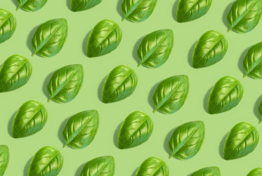
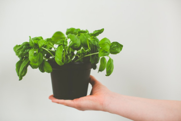

 바질 키우기 기초 바질은 초보자가 키우기 쉬운 허브인 편입니다. 과습을 잘 견디며, 햇빛은 많이 요구합니다.겨울에 실내에 들여서 키운다면 여러해 동안 키울 수도 있습니다. 더 자세히 보기
 바질 뜯어먹기 기초 바질은 향이 좋고 맛도 좋아, 다양한 요리에 사용할 수 있습니다. 샐러드로 먹기도 하고 파스타에 향신료로 뿌려먹기도, 토마토와 함께 와인 안주로 먹기도 합니다. 더 자세히 보기